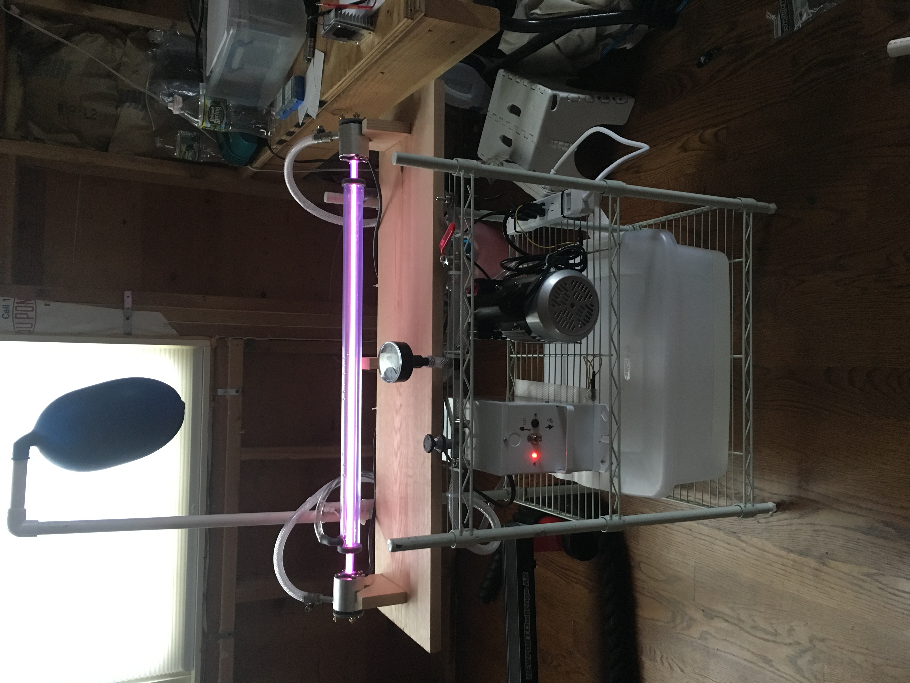
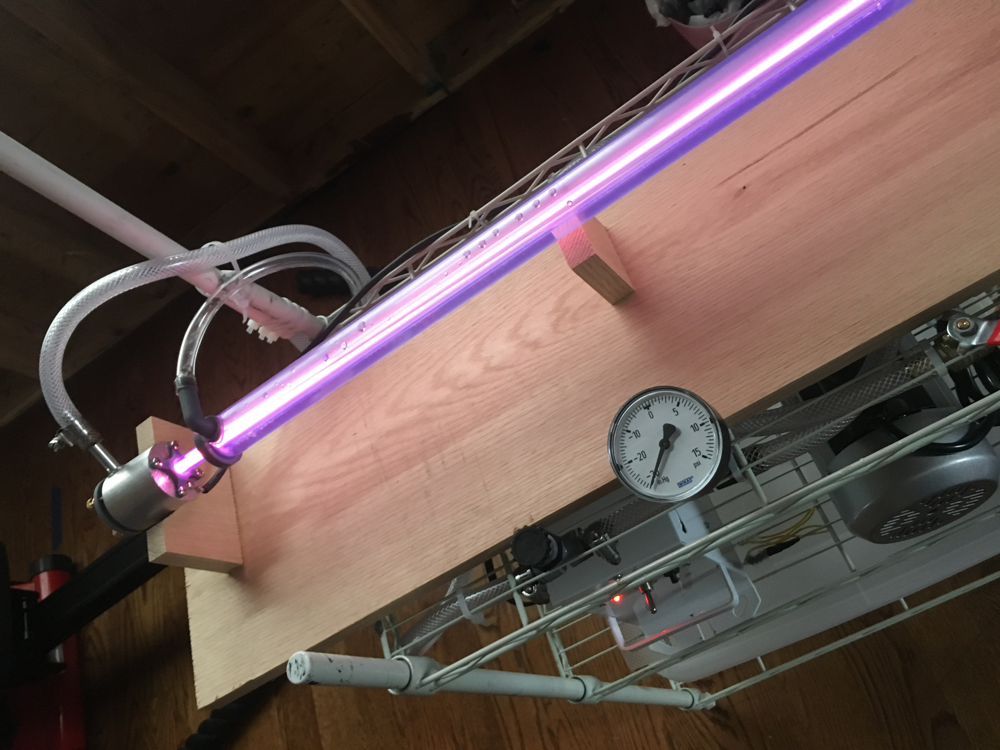
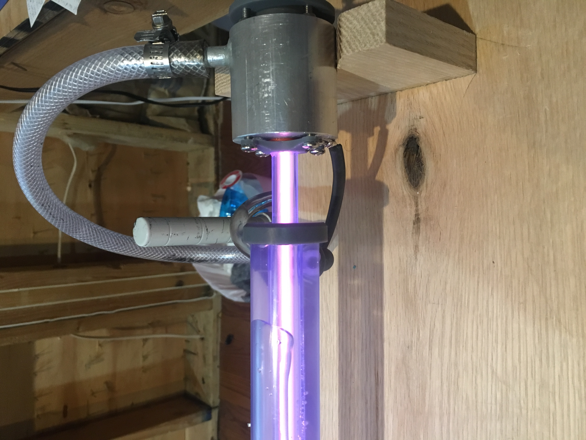

Project Portfolio
Project Lead, AeroBing Ambition-III Sounding Rocket
The AeroBing Ambition-III Sounding Rocket is designed to carry scientific payload to an altitude in excess of the Karman Line. Ambition-III is currently under developement with a planned launch date in May, 2021.
Designed and Constructed a Carbon Dioxide Laser



The images above show just the plamsa discharge and are running on air. All grey-colored plastic parts were designed by me and 3D printed on a Formlabs Form 2 Printer
Coffee Pot Designed for Users with Hand Tremors
- Collaborated with a team of 7 people to design a coffee pot that
is safe and ergonomic to use for a user with hand tremors - Conducted brainstorming sessions and created three alternative
designs from which the final design was based upon - Applied the Pahl and Beitz System of Design to ensure rank the
alternative designs - Designed a hinge inspired by the ball joint of a boxer's speed
bag that would absorb the motion of involuntary hand movement - Led the modeling of the final design and utlized Autodesk Fusion
360 computer aided design software


Additional Projects
- Rocketry: Constructed various rockets using many different types of fuels including hair spray, alcohol vapors, water and air pressure as well as conventional model rocket engines. The water rocket was about two feet tall and was made from several two liter soda bottles. The water rocket used a G-force sensor and arduino to detect its apogee and deploy a parachute.
- Golf Putter Head: Designed and 3D printed a putter head that better fit my eye. The putter head was carefully designed with additional curves and a better alignment system.
- Ferrofluid Audio Speaker: Designed an audio speaker that used ferrofluid as a lubricant to reduce vibrational noise due to friction as the magnet oscillated.
- 3-Stage Coil Gun: Built a three stage coil gun. Designed a gate sensor to fire each coil stage only when the projectile was a certain distance from the coil stage. This allowed for each coil stage to be fired in succession based on the position of the projectile in the barrel rather than a predetermined time delay. This increased the effectiveness of each stage. The coilgun used spools that were 3D printed to allow for easy wrapping of the magnet wire.
- High Voltage Experiments: Built two high voltage power supplies using flyback transformers from old television sets. Then used the power supplies to power high voltage demos such as Jacob's ladder and ion-lifters. Was able to power the CO2 laser (from above) with one of them.
- Aluminum Foundry: Contructed an aluminum foundry using play sand and a plaster of Paris refractory material. A heat gun forced hot air into the bottom of the foundry. The foundry was able to completely melt aluminum cans and heat steel until it was red hot and malleable.
- Reaction Time Arcade Game: Designed and constructed a reaction time arcade game as part of a team. The game utilized a 3D printed infrared blaster device that was to be drawn and fired by the player in minimal time. The game was programmed using an Arduino microcontroller and included a game mode that allowed the player to duel against a computer simulated player that increased in difficulty. The longer the player lasted against the computer, the higher the player's score.
- Reverse Engineering Project: Dissassembled an Oster vegetable steamer and identified every single part. Siemens Solid Edge was utlized to model every part, create dimensional drawings, and render photorealistic images of the assembly.
- Van de Graaff Generator and Wimshurst Generator: Designed and constructed a Van de Graaff generator using an aluminum can, thread, Teflon Tape, and a rubber band. Also constructed a Wimshurst generator and Leiden jars using plastic CD casings and mason jars.
- 3D Printing: Designed and 3D printed many other parts including an adjustable laser alignment jig for aligning the optics on my CO2 Laser, clamps for a glass build plate for my 3D printer, a flashlight mount for my bicycle, various electronics enclosures, and a splint for myself after injuring my finger.
Education
Binghamton University Thomas J. Watson School of Engineering | Expected: May 2021
- Bachelor of Science in Mechanical Engineering
- Current Overall GPA: 3.52/4.00, Major GPA: 3.74/4.00
- Dean’s List Honors: Spring 2018, Fall 2018, Spring 2019, Fall 2019
- Selected to the inaugural class of the Innovation Scholars Program
Charity and Work Experience
- The Scarsdale Concours is an annual registered 501(c)3 charity car show that displays over 100 cars and attracts thousands of people to Scarsdale Village, Scarsdale, NY
- Donated over $20,000 annually to local charities including The Warrior and Family Assistance Fund, Scarsdale and Edgemont Family Counseling Services, and The Paulie Strong Foundation
- Assisted in the design of a study to test the effects of fatigue on an EEG based concussion detection system
- Assisted in the recruitment of subjects for another parallel study to test the efficacy of the EEG device mentioned above and explained the study to the prospective subjects to obtain informed consent
- Currently completing a manuscript for a feasibility study on the use of an exoskeleton rehabilitation device for gait training in stroke patients
- Collaborated with fellow volunteers to design an adaptive Xbox gaming setup for rehabilitation in hemiparetic stroke patients
- Traveled to the Brooklyn Nets training facility in Brooklyn to record motion capture footage as part of an injury prevention protocol for the Brooklynettes cheerleading squad and dance team
- Worked alongside a computer programmer to demonstrate the feasibility and accuracy of an open-source marker-less motion capture program compared to a standard equipment setup
- Completed a data normalization project on over 1600 products in a warehouse inventory
- Designed a detailed spreadsheet with Microsoft Excel that allowed the company to merge the data with their operation management software
- Reorganized the inventory and utilized a system to enable easy product retrieval and speedy shipment
- Measured and inspected critical components, including firing pins for the Colt M4 Carbine
- Read technical drawings including tolerances and dimensional information
- Collaborated with project managers and machinists to ensure inspections were perfect and to suggest improvements
- Operated precision measuring equipment a Falcon 3-Axis digital measuring machine, an optical comparator, and various calipers, micrometers (w/ Vernier scale), and various gages. Assisted in the operation of a Brown and Sharp 5-Axis CMM
- Designed and coordinated innovative drills and activities for groups of 10-20 campers aged 6-12 years old
- Implemented safety measures such as using tennis balls to insure the safety of campers and myself
- Created original online marketing content with a video for Rolls Royce reaching over 1000 views
- Shadowed Ferrari-certified technicians as they worked on rare collector-owned Ferraris
- Networked with customers and greeted them alongside Ferrari and McLaren salespeople
Board Member, Scarsdale Concours d’Elegance Car Show | Aug. 2014 – Oct. 2016
Research Volunteer, Putrino Lab/Abilities Research Center, Icahn School of Medicine at Mount Sinai | Manhattan, NY | Aug. 2014 – Oct. 2016
Data Management and Shipping, Mercent Capital Group | Plainview, NY | Summer 2017, 2018, Winter 2019
Golf Caddie, Willow Ridge Country Club | Harrison, NY | Summer 2018
Quality Control Intern, Tri Technologies Machine Shop | Mount Vernon, NY | Summer 2016
Golf Instructor, Westchester Summer Day Camp | Mamaroneck, NY | Summer 2015
Summer Intern, Miller Motorcars | Greenwich, CT | Summer 2013
Leadership and Involvement
- Participated in a design thinking and creative problem-solving seminar that spanned multiple classes
- Collaborating with students to diagnose on-campus problems and brainstorming solutions
- Teams may be awarded funding to devise and implement solutions
- Create and distribute mid-semester surveys for students to provide anonymous feedback on the class
- Generate reports based on compiled survey feedback and forward to professors and department chair
- Facilitate a meeting with department chairs and the Industry Advisory Panel made up of representatives from major engineering companies including Lockheed Martin and General Electric
- Designing a two-stage model rocket with electronic measuring equipment on board to measure flight data including height and velocity
- The rocket is fully electronically controlled, including the decoupling mechanism, second-stage ignition system, and second-stage parachute deployment system
- Plan on holding a model rocket competition with other student aerospace organizations
- Assist in member recruitment, general information sessions, and facilitate practices at local driving ranges and golf courses
- Team placed 1st in the NCCGA Northeast Regional Tournament at Turning Stone Golf Course in Verona, NY, Fall 2018
Innovation Scholars Program | Binghamton, NY
Junior Advisor, Mechanical Engineering Student Advisory Committee | Binghamton, NY | Fall 2018 – Current
Vice President, Rocketry Team Lead, B-Above Aviation Student Association | Binghamton, NY | Fall 2018 – Current
Treasurer, Binghamton Club Golf Team | Binghamton, NY | Spring 2018 – Current
Skills and Capabilites
- 3D CAD modeling with PTC Creo, Autodesk Fusion 360, Autodesk Inventor, and Siemens Solid Edge
- Structural, thermal, and fluid simulation and analysis with ANSYS Workbench
- Own and operate an FDM 3D printer, bandsaw, belt grinder, and drill press
- MIG and TIG Welding
- Programming with MATLAB, Python, HTML/CSS; limited experience with JavaScript, C++ and Java